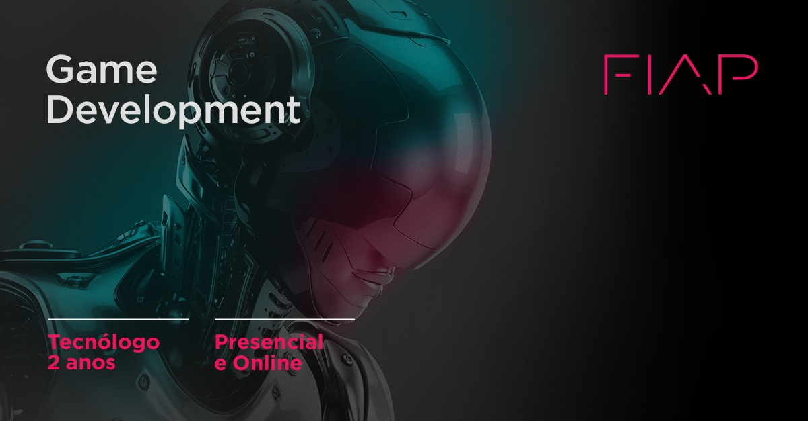

Cursos da Fiap

Você vai ser preparado para desenvolver jogos em todas as plataformas: internet, consoles (Playstation, Xbox e Nintendo), smartphones (aplicativos para celulares e tablets), desktops (PC e Mac), TV digital, simuladores de realidade virtual e virtualizações (totem tour virtual). Você vai aprender a idealizar e desenvolver um jogo desde o enredo, passando pela criação de personagens, conceitos de gameficação, ambientes e objetos de cenários. A grade contempla conhecimentos de ilustração, programação, inteligência artificial, modelagem 2D e 3D, design, testes, implantação e gestão. Todas as aulas são ministradas em laboratório (inclusive laboratório Apple) com a suíte da Autodesk, utilizada em Hollywood, o Maya, além das ferramentas líderes do mercado como Photoshop e Unity3D. Os professores do curso são especialistas de mercado, com experiência acadêmica, atuantes na área e proprietários de empresas que desenvolvem jogos.
Você vai ser preparado para desenvolver jogos em todas as plataformas: internet, consoles (Playstation, Xbox e Nintendo), smartphones (aplicativos para celulares e tablets), desktops (PC e Mac), TV digital, simuladores de realidade virtual e virtualizações (totem tour virtual). Você vai aprender a idealizar e desenvolver um jogo desde o enredo, passando pela criação de personagens, conceitos de gameficação, ambientes e objetos de cenários. A grade contempla conhecimentos de ilustração, programação, inteligência artificial, modelagem 2D e 3D, design, testes, implantação e gestão. Todas as aulas são ministradas em laboratório (inclusive laboratório Apple) com a suíte da Autodesk, utilizada em Hollywood, o Maya, além das ferramentas líderes do mercado como Photoshop e Unity3D. Os professores do curso são especialistas de mercado, com experiência acadêmica, atuantes na área e proprietários de empresas que desenvolvem jogos.